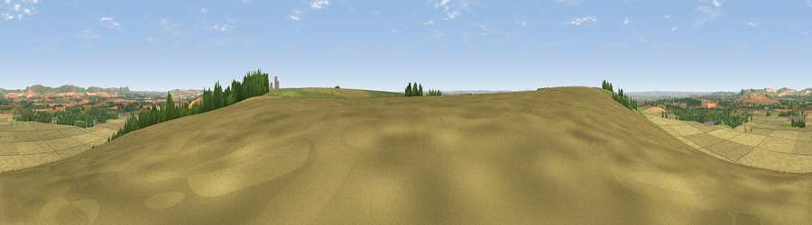

Viewpoint near Wedhampton
#18773 in England · top 30% of its area beats it · near WedhamptonThe view, rendered

A 360° render of this exact spot computed from the terrain model, tree cover and land cover — summer colours, afternoon light, calibrated against photographs of famous viewpoints. Real trees, hedges and buildings will differ in detail.
The panorama
Grey silhouette: terrain skyline in each direction (720 bearings, Earth curvature and refraction included). Dashed green: skyline with trees (+15 m) and buildings (+8 m) as obstacles. Blue strip: how far the ground is visible on each bearing.
Where the view opens
Wedge length = distance to the farthest visible ground on that bearing (vegetation-aware). Rings at 10, 25 and 50 km.
What fills the view
70% cropland · 22% grassland · 7% woodland · 1% built-up
Angular shares of the visible panorama (visual magnitude), not map area. Landscape diversity 0.36 (0–1 Shannon).
Key numbers
More beautiful places nearby
The staircase of upgrades: each row has a higher view potential than everything closer. Driving times are estimates from straight-line distance, calibrated against real road routing — check an actual route before setting out.
| Place | Direction | Drive | Score |
|---|---|---|---|
| Viewpoint near Wedhampton | SE · 1 km | ~2 min | 56.9 |
| Viewpoint near Urchfont | W · 2 km | ~4 min | 66.5 |
| Viewpoint near Allington | NNE · 9 km | ~18 min | 75.6 |
| Martinsell viewpoint | ENE · 15 km | ~27 min | 77.3 |
| Viewpoint near Berwick St John | SSW · 37 km | ~56 min | 78.2 |
| Viewpoint near Stinchcombe | NW · 53 km | ~74 min | 80.5 |
| Nottingham Hill | N · 73 km | ~97 min | 80.9 |
| Viewpoint near Studland | S · 74 km | ~98 min | 82.2 |
51.30017, -1.92285 · source: screening · position refined by local search. Computed location — check access rights before visiting.